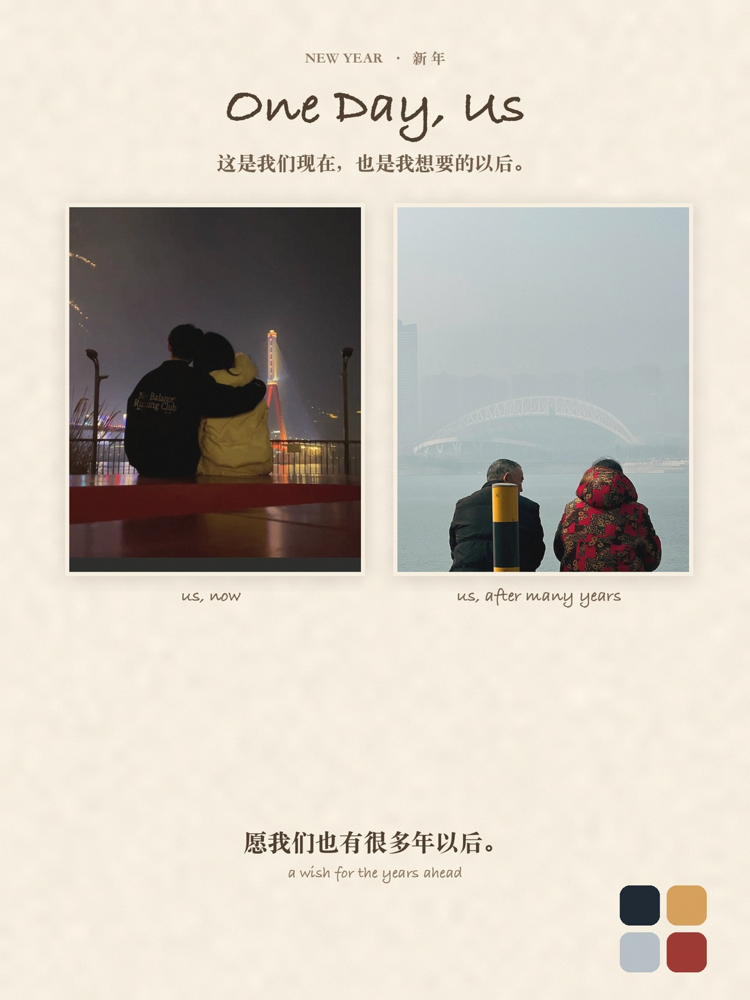
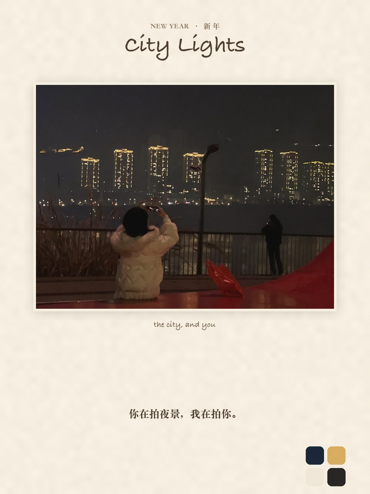
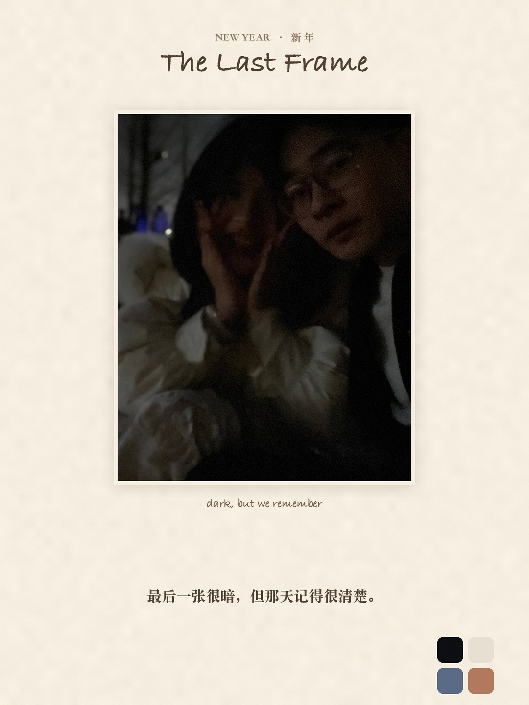

CHAPTER 04 · 新年
那晚的烟花很吵，我只听见你。
NEW YEAR · 一起跨年

01 / 双联页
这是我们现在，也是我想要的以后。
02 / 你靠过来的那一秒
新的一年，还是想离你这么近。
03 / 烟花下
烟花是给新年的，你是给我的。

04 / 你拍夜景
你在拍夜景，我在拍你。

05 / 最后一张
最后一张很暗，但那天记得很清楚。
NEW YEAR · 新年
愿我们也有很多年以后。
a wish for the years ahead
for you, always.
AUTO · 自动翻页